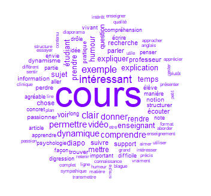

Activités universitaires et d’enseignement
Ce chapitre à pour objectif de présenter mes activités universitaires et pédagogiques en tant qu’enseignant-chercheur.
Comités de sélection
- Chambéry (2023) Poste n°4377
- Lille (2023) Poste n°0175
- Paris Nanterre (2023) Poste n°4834
- Caen (2022) Poste n°4549
- Paris Nanterre (2021) Poste n°4644
- Lille (2020) Poste n°0161
- Paris Descartes (2019) Poste n°0114
- Strasbourg (2019) Poste n°0287
- Reims (2019) Poste n°1231
- Lille (2018) Poste n°0072
- Strasbourg (2018) Poste n°4480
- Paris Descartes (2018) Poste n°0078
- Paris 8 (2017) Poste n°0402
- Poitiers (2016) Poste n°1626
- Reims (2011) Poste n°1231
Jury de thèse
Education thérapeutique du patient et groupes de soutien entre pairs : des outils de soin au service du rétablissement et de la qualité de vie des personnes souffrant de troubles bipolaires par Marion Espitalier sous la direction de Marie Grall-Bronnec et de Leïla Moret-Majoube (soutenance prévue le 23/11/2023). Membre du jury avec Isabelle Amado, Nicolas Franck et Bernard Pachoud.
Evaluation d’un programme de régulation émotionnelle dans une population d’étudiant.es universitaires par Clara Nardelli sous la direction de Céline Baeyens & Catherine Bortolon (soutenance prévue le 13/11/2023). Membre du jury avec Pierre Phillipot, Kristin Gainey, Matthias Berking, Maya Tamir et Anna Tcherkassof .
L’épuisement estudiantin : Approche clinique, psychopathologique, épidémiologique et psychothérapeutique TCC du syndrome de burnout académique. Christine Faye-Dumanget. Sous la direction de Abdel-Halim Boudoukha. Thèse soutenue à Nantes le 14/12/2018 (Rapporteur). Membre du jury avec Cyrille Bouvet et Vera Walburg.
Existe-t-il un lien entre ce que je pense et ce que j’imagine ? Une approche processuelle centrée sur les pensées répétitives négatives et la perspective visuelle en imagerie mentale. Perrine Douce. Sous la direction de Céline Baeyens. Thèse soutenue à Grenoble le 18/12/2017. Membre du jury avec Martine Bouvard, Abdel-Halim Boudoukha et Pierluigi Graziani.
Comité de suivi de thèse
- Comprendre les comportements prosociaux et antisociaux à travers une approche méthodologique mixte : le cas des jeux vidéo en ligne multijoueur par Maud Lemercier sous la direction de Lucia Romo et de Charles Tijus (soutenue le 16/11/2020).
- Education thérapeutique du patient et groupes de soutien entre pairs : des outils de soin au service du rétablissement et de la qualité de vie des personnes souffrant de troubles bipolaires par Marion Espitalier sous la direction de Marie Grall-Bronnec et de Leïla Moret-Majoube (en préparation depuis le 18/01/2019 soutenance prévue le 23/11/2023).
- Place de la psychopathologie dans le lien entre le comportement parental et la dissociation par Vincent Chabasseur sous la direction de Marie-Claire Gay (en préparation depuis le 01/09/2020).
Encadrement doctoral et scientifique
Contributions principales à des travaux doctoraux
La santé mentale des étudiants, approche par modélisation en réseaux : des données épidémiologiques aux interventions psychologiques. Quentin Facon-Barillot sous la codirection de Lucia Romo & Yannick Morvan (thèse en préparation depuis 01/09/2021). Contribution à l’utilisation des approches en réseaux comme modélisations des difficultés de santé mentale des étudiants (détresse psychologique, dépression, idéation suicidaire). Ces difficultés psychologiques sont alors considérées comme un système complexe en lien avec les caractéristiques socio-démographiques (âge, sexe, inscription académique, réussite universitaire, profil socio-économique) et le recours aux soins. Les techniques d’analyse en réseau, en se focalisant sur l’évolution des relations entre symptômes, testent les modifications d’un système au cours du temps (invariance) par exemple de la structure du réseau, du dégré de connectivité générale du réseau et des connectivités spécifiques entre symptômes. Les techniques d’analyse dites en réseaux temporels seront utilisées afin de modéliser les dynamiques complexes d’évolutions des symptômes au décours d’intervention sur la santé mentale des étudiants. Elles permettent ainsi d’identifier de manière fine les cibles d’interventions les plus pertinentes pour améliorer ces dernières.
Affectivité et alimentation : étude de leurs liens au travers des concepts d’alimentation émotionnelle et d’addiction à l’alimentation. Léna Bourdier. Sous la direction de Lucia Romo et de Sylvie Berthoz. Thèse soutenue à Paris Nanterre le 06/12/2017. Contribution au design expérimental, à l’implémentation concrète du recueil des données, à la programmation de l’interface de saisie en ligne des questionnaires sous LimeSurvey avec Laurence Kern. Choix des méthodologies d’analyses de données, réalisations des analyses de données, écriture de la partie méthode et analyse des données et révisions des manuscrits (activités réalisées par mes soins propres pour l’article publié dans Appetite, et réalisées conjointement avec Christophe Lalanne et compétitivement entre R et Mplus pour l’article publié dans Frontiers). Contribution ayant donné lieu à publications d’articles.
From physical inactivity to the problematic practice of physical exercise: a study of their prevalence, measures, and determinants. Gayatri Kotbagi Sous la direction de Lucia Romo et de Laurence Kern. Thèse soutenue à Paris Nanterre le 06/12/2016. Contribution au design expérimental, a l’implémentation concrète du recueil des données, à la programmation de l’interface de saisie en ligne des questionnaires sous LimeSurvey avec Laurence Kern. Participation au choix des méthodologies d’analyses de données, supervisions et relecture des analyses de données, révision des manuscrits. Contribution ayant donné lieu à publications d’articles.
Contributions annexes à des travaux doctoraux
Etude des lipides membranaires comme facteur de vulnérabilité à la psychose chez des patients à ultra haut risque de psychose (UHR) et dans un modèle murin. Ariel Frajerman. Sous la direction d’Oussama Kebir. Thèse soutenue à Paris Cité le 24/11/2021. Encadrement sur des travaux annexes à la thèse et plus particulièrement sur le centre d’intérêt commun de la santé mentale des étudiants. Encadrement principal sur l’ensemble des projets relatifs à cette thématique. Contribution ayant donné lieu à publications d’articles.
Approche neuropsychologique des patients présentant des troubles complexes du neurodéveloppement à l’âge adulte. Charlotte Alexandre. Sous la direction de Isabelle Amado et co-encadrée par Marie-Odile Krebs. Thèse soutenue à Paris Cité le 24/09/2019. Aide dans les travaux liés à l’activité de remédiation cognitive et de réhabilitation psychosociale du C3RP. Soutien méthodologique et statistique dans la préparation d’un travail de caractérisation des facteurs associés aux profils neurodéveloppementaux complexes caractérisés à l’aide d’une approche de machine learning.
Identification de facteurs biologiques de la transition psychotique. Boris Chaumette. Sous la direction de Marie-Odile Krebs et co-encadrée par Oussama Kebir. Thèse soutenue à Paris Descartes le 05/09/2016. Encadrement sur les méthodes d’analyses des données longitudinales du cortisol utilisé comme marqueur du stress dans la transition psychotique. Aide à l’identification des trajectoires et typologies de trajectoires en interaction avec des variables socio-démographiques, cliniques et méthylomiques. Encadrement sur des travaux annexes à la thèse et plus particulièrement sur le centre d’intérêt commun de la santé mentale des étudiants. Contribution ayant donné lieu à publication d’articles.
Encadrement de thèses d’exercice de médecine
Recours aux soins et adéquation des traitement chez les étudiants en médecine et jeunes médecins : une enquête nationale. Laure Vergeron. Sous la direction de Ariel Frajerman. Thèse en préparation. Encadrement scientifique sur les objectifs, la mise en oeuvre, l’analyse des données et la rédaction scientifique. Encadrement et co-écriture d’un article. Contribution ayant donné lieu à une soumission.
La santé mentale des étudiants en médecine de France en 2021 : une enquête Nationale. Franck Rolland. Sous la direction de Ariel Frajerman. Thèse soutenue à Paris Saclay le 27/01/2023. Encadrement scientifique sur les objectifs, la mise en oeuvre, l’analyse des données et la rédaction scientifique. Contribution ayant donné lieu à publication d’articles
Psychose émergente chez l’adolescent et le jeune adulte : l’accès aux soins en question : À partir des données du centre pilote français de détection et d’intervention précoces. Alice Oppetit. Sous la direction de Julie Bourgin. Thèse soutenue à Paris Descartes le 06/10/2016. Encadrement sur l’article publié à partir du dispositif de prévention et d’intervention précoce en milieu scolaire (dispositif Fil-Harmonie). Contribution, co-construction du dispositif avec le Dr Monchablon ; construction de la méthodologie d’évaluation quantitative et qualitative du dispositif. Réalisation des analyses statistiques. Encadrement et co-écriture de l’article. Contribution ayant donné lieu à publication d’article.
Vers une reconceptualisation de la psychose : implications cliniques et méthodologiques. Boris Chaumette. Sous la direction de Oussama Kebir. Thèse soutenue à Paris Descartes le 05/10/2016. Contribution à cette thèse sur l’analyse lexicométrique des articles publiés sur la schizophrénie. Contribution ayant donné lieu à communication.
Médecine préventive universitaire : évaluation d’un dispositif de dépistage des troubles psychologiques chez les jeunes adultes. Clotilde Kowalski. Sous la codirection de Yannick Morvan et Frédéric Urbain. Thèse soutenue à l’université Versailles St Quentin le 29/09/2016. Contribution ayant donné lieu à communication.
Activités d’enseignement
Résumé
Activité d’enseignement annuelle d’environ 230h en moyenne équivalent TD depuis 20101 se répartissant à 36% en licence, 52% en Master et 7% en doctorat (37% des enseignements en cours magistraux)2.
Concernant mes activités d’enseignement actuelles :
En licence il s’agit principalement d’enseignements en 1ère année de psychologie, de PASS et de Licence santé société (pour un volume de 48hCM) où j’introduis la psychologie clinique au travers de l’histoire des classifications (du DSM en particulier) illustrée avec la dépression du 18ème siècle à nos jours. Je présente également les critiques du DSM et alternatives que représentent les Rdoc, HITOP et approches en réseau. En licence également je présente des enseignements relatifs à la santé des jeunes adultes et étudiants avec comme perspective la question de la transition dans la pathologie, de la mesure des troubles et de leurs prises en charge (pour un volume de 22h équivalent TD). Enfin j’ai assuré de 2014 à 2022 la coordination de l’enseignement de méthodologie de l’entretien (19 groupes de TD) pour lequel j’enseignais environ 48hTD par an.
Pour l’enseignement de Master, une sensibilisation forte à la méthodologie de la recherche (reproductibilité, réplicabilité, science ouverte, méthodologie, p-hacking, degrés de liberté des chercheurs, théorie et formalisation) en M1 pour 12h CM, ces éléments sont poursuivis en M2 et appliqués à l’actualité de la recherche en psychothérapie et aux approches en neurocognition développementale pour 24hCM. Ce cours se prolonge également par 18hTD totalement en anglais (Research Seminar in Clinical Psychology Science) où les étudiants produisent en petits groupes des podcasts sur l’actualité scientifique vue en cours ou des travaux de questions récentes de la psychologie. Enfin un cours de méthodes et statistiques pour psychologue clinicien est proposé afin de sensibiliser les étudiants aux techniques de validation factorielle des échelles et tests cliniques pour 18hTD.
Au niveau doctoral je propose des formations sur la science ouverte, les moyens techniques de la science ouverte (R, Rstudio, Github & OSF), les techniques d’analyse lexicométrique avec IramuteQ, et enfin les techniques d’équations structurelles longitudinales (Latent Growth Modeling & Growth Mixture Modeling) pour environ 15hTD.
Par ailleurs, dans le cadre des confinements, j’ai produit environ 15h de cours asynchrones en enregistrements vidéo avec incrustation sur fond vert du diaporama et de l’enseignant (avec Open Broadcast Studio - OBS). Les cours ont été scénarisés et découpées selon la trame des cours en présentiel en capsules de temps variables (5-10-15-20-30-40-50 minutes) de manière à rendre le suivi pour les étudiants plus facile.
Indicateurs
Voici quelques indicateurs (tableaux et graphique) permettant de décrire de mon activité d’enseignement depuis 2007 :
Descriptifs des enseignements (livrets pédagogiques)
A. Paris Nanterre (2013-2023)
Niveau Licence
1.Introduction psychologie clinique et psychopathologie, L1 Psychologie + PASS + Licence Santé Société
Responsabilité & volume : Oui, 24h CM (2h x 12 semaines).
Descriptif : L’enseignement de psychologie clinique abordera les fondements historiques, sociaux, et politiques des systèmes de classifications diagnostiques de 1850 à nos jours (autour du DSM principalement) afin d’en éclairer les débats épistémologiques. Il fournira aux étudiants des repères en sémiologie (étude des signes et symptômes cliniques), la dépression étant utilisée comme principale illustration. Les apports des classifications comme le DSM mais aussi leurs limites seront présenté et notamment les approches alternatives davantage transdiagnostiques telles que les Rdoc, HiTOP et approches en réseaux. Enseignement de Psychopathologie psychanalytique : Face à l’étendue actuelle des perspectives de travail du psychologue clinicien, sa pratique clinique, son cadre de travail et de réflexion, évoluent et connaissent des réaménagements. La psychanalyse, au delà de ce que l’on nomme la cure type, au delà des pathologies psychiques telles que les névroses et les psychoses, s’intéresse et s’est adaptée à des patients souffrant de pathologies psychiques et somatiques pas ou peu abordées par elle jusqu’alors : les troubles du comportement, allant des comportements addictifs (troubles du comportement alimentaire, le binge drinking, la toxicomanie, les addictions aux jeux vidéos…) aux comportements violents, destructeurs nommés « pathologies de la modernité » mais aussi la prise en charge de patients dont les capacités à « se représenter » font défaut, menant à des processus de « somatisation ». Les questions du genre et des troubles de l’identité sexuelle, du handicap, du suivi des patients atteints de maladies somatiques parfois chroniques, sont, enfin, autant de perspectives d’élaborations cliniques et théoriques dans lesquelles désormais, la psychanalyse s’inscrit.
2.Cas cliniques en thérapies cognitivo-comportementales, L2 Psychologie
Responsabilité & volume : Non,CM (2h x 12 semaines)
Descriptif : Il s’agit d’étudier les fondements théoriques et techniques des méthodes d’entretien clinique (entretiens : non-directif, structuré, d’anamnèse, de conseil, de soutien), des échelles d’évaluation clinique (auto et hétéro-évaluations), des tests de niveau et des tests de personnalité. Des dossiers cliniques contenant des protocoles d’instruments présentés dans le cours seront étudiés.
3.Psychologie, L2 Santé et Société
Responsabilité & volume : Non,CM (2h x 2 semaines)
Descriptif : L’enseignement de psychologie du développement, de psychologie clinique et de psychopathologie abordera dans le prolongement des cours de la L1 : 1) Dans le champ de la psychologie du développement, certains concepts qui expliquent les changements qui s’opèrent chez l’enfant (de la naissance à la fin de l’adolescence) et sous-tendent des difficultés d’adaptation psychique et physique; 2) Dans le champ empirique et TCC, l’enseignement abordera les enjeux de la santé mentale des étudiants dans une perspective de prévention et d’intervention précoce et resituera le champs de la santé mentale étudiante dans la complexité des différents acteurs institutionnels ; 3) Dans le champ de la psychopathologie clinique psychanalytique, seront abordés certains concepts psychanalytiques en rapport avec la santé mentale, la précarité, la violence sociale et la psychopathologie de l’extrême en général avec la dimension clinique inhérente en différentes situations cliniques rencontrées en consultations libérales ou en institution.
4.Méthodologie de l’Entretien, L3 puis L2 Psychologie
Responsabilité & volume : Oui,TD (2h x 12 semaines)
Descriptif : Il s’agit de former les étudiants aux différents types d’entretien selon leurs objectifs (recherche, recueil d’informations, communication d’informations, conseil, écoute clinique, soutien, négociation, d’enquête, etc.) et aux différentes méthodes de conduite de l’entretien. Une initiation à l’analyse de contenu complètera la formation notamment au travers d’analyses de cas vidéos ou textes ainsi que d’analyses textuelles après réalisation et de transcription d’entretiens. Bibliographie : SHEA, C. La conduite de l’entretien psychiatrique. L’art de la compréhension, 2005. Broc, G & Caumeil, B., Analyse des données, Partie 2, Chapitres 9-11, 2018.
5.Initiation aux Méthodes Cliniques, L3 Psychologie
Responsabilité & volume : Non,TD (2h x 12 semaines)
Descriptif : Il s’agit d’étudier les fondements théoriques et techniques des méthodes d’entretien clinique (entretiens : non-directif, structuré, d’anamnèse, de conseil, de soutien), des échelles d’évaluation clinique (auto et hétéro-évaluations), des tests de niveau et des tests de personnalité. Des dossiers cliniques contenant des protocoles d’instruments présentés dans le cours seront étudiés.
6.Entretien dirigé à des fins diagnostiques, Lpro Psychologie
Responsabilité & volume : Oui,TD (5h x 1 semaines)
Descriptif : L’objectif de ce cours est de donner des éléments théoriques et pratiques pour la conduite d’entretien dirigée ou semi- dirigée dans le contexte d’une exploration des besoins de la personne. Il s’agit alors de l’amener à expliciter ses attentes, mais aussi à pouvoir se servir des différents bilans, explorations, interventions qui ont eu lieu auparavant. Nous utiliserons le cas de la dépression et l’utilisation du MINI et d’échelles d’évaluations comme illustrations notamment de la conceptualisation de ce trouble, de la manière dont il est évalué ainsi que des potentielles difficultés/limites inhérentes à ce type d’évaluation.
7.Travaux d’étude et de recherche, L3 Psychologie TCC
Responsabilité & volume : Non, 24h TD (2h x 12 semaines).
Descriptif : Au cours de cet enseignement, les étudiants apprendront à construire une problématique, à rechercher des références bibliographiques, à organiser ces références, à constituer une revue de la littérature, à rédiger des concepts théoriques, à s’initier à la méthodologie de la recherche et aux plans de recherche et à utiliser les normes bibliographiques. Ce travail sera formalisé par la réalisation d’un dossier présentant un projet de recherche élaboré par l’étudiant.
8.Psychologie et Santé : La Santé Psychique des Jeunes Adultes, L3 Psychologie TCC
Responsabilité & volume : Non, 24h CM (2h x 12 semaines).
Descriptif : Les souffrances psychiques des étudiants, encore souvent dans l’adolescence, sont trop méconnues. Elles peuvent aller du stress jusqu’aux dépressions, phobies, obsessions, conduites à risques, addictions etc. comme le soulignent les rares enquêtes épidémiologiques actuelles. Ses souffrances sont souvent insuffisamment repérées, évaluées puis traitées au vue d’un accès aux soins difficile pour une part des jeunes adultes aujourd’hui. Par ailleurs, les difficultés d’inscription dans le monde professionnel et social ; un avenir personnel et collectif incertain et imprévisible sont également à prendre en compte. Il est alors essentiel de former les futurs professionnels des différentes spécialités à une meilleure connaissance de la spécificité de la prise en charge des jeunes adultes, avec une perspective pluridisciplinaire. Des enseignants de psychologie (psychologie clinique et psychopathologique, psychologie sociale) mais aussi de STAPS et de sociologie, ainsi que des professionnels de santé interviendront dans ce cours.
Niveau Master
9.Méthodologies de la recherche en psychologie clinique, M1 Psychologie TCC + Psychanalyse
Responsabilité & volume : Oui, 24h CM (2h x 12 semaines)
Descriptif : Enseignement des différentes méthodologies de la recherche en psychologie clinique. Une partie sera dédiée à la présentation de méthodes qualitatives (observation, analyses inductives : Analyse phénoménologique interprétative, Théorisation ancrée,…). Une seconde sera orientée en réponse aux préoccupations croissantes de la psychologie et des autres sciences concernant les faibles taux de reproductibilité, des résultats publiés un mouvement pour mener des recherches plus ouvertes et transparentes (Open Science). Ce cours permettra de présenter quelques outils utiles pour la reproductibilité des recherches mais qui permettent aussi de faciliter la production collaborative d’articles scientifiques (Zotero, Rstudio, Github, Markdown, OSF, PsyArxiV).
10.La santé psychique : du normal au pathologique, M1 Psychologie (Enseignement d’ouverture Master non TCC ou Psychanalyse)
Responsabilité & volume : Oui, 18h CM (1h30 x 12 semaines)
Descriptif : En psychologie clinique et en psychopathologie, il semble particulièrement délicat de distinguer ce qui relève du début d’un trouble psychique de ce qui relève des différents changements transitoires, évolutifs et normaux concernant les émotions et les représentations. Cette difficulté tient également au fait que les diverses modifications se manifestent tant au niveau intra-psychique et cognitif qu’au travers des comportements et des interactions sociales. La question se pose alors constamment dans ce cadre : comment opérer une distinction entre une personne qui éprouve simplement des difficultés, et une autre qui développe un trouble pour lequel une prise en charge semble nécessaire ?
L’enseignement en Psychopathologie (6 séances) portera sur les notions même de « normal » et de « pathologique » tant au regard des débats philosophiques autour de cette question que dans leur application dans le champ de la psychopathologie.
L’enseignement en Clinique (6 séances) portera sur l’identification des facteurs de risque et de transition, chez les adolescents et les jeunes adultes, des pathologies dépressives et schizophréniques. Nous aborderons :
les notions de « neurodéveloppement cognitif » et d’interaction avec l’environnement notamment dans la relation avec les groupes de pairs et les capacités de représentations à l’adolescence pour la dépression
les aspects évolutifs des troubles de nature psychotique au cours du temps notamment sur les « mécanismes neurocognitifs » d’interaction avec l’environnement.
Bibliographie Partie Psychopathologie :
Canguilhem, G. (1966). Le Normal et le Pathologique, édit. 2010. Paris : PUF
Bibliographie Partie Clinique :
Davey, C. G., Yucel, M., & Allen, N. B. (2008). The emergence of depression in adolescence: development of the prefrontal cortex and the representation of reward. Neurosci Biobehav Rev, 32(1), 1-19.
Andersen, S. L., & Teicher, M. H. (2008). Stress, sensitive periods and maturational events in adolescent depression. Trends Neurosci, 31(4), 183-191.
Ernst, M., & Fudge, J. L. (2009). A developmental neurobiological model of motivated behavior: anatomy, connectivity and ontogeny of the triadic nodes. Neurosci Biobehav Rev, 33(3), 367-382.
van Os, Jim, Kenis, Gunter, & Rutten, Bart P. F. (2010). The environment and schizophrenia. Nature, 468(7321), 203-212.
Insel, Thomas R. (2010). Rethinking schizophrenia. Nature, 468(7321), 187-193.
Tandon, R., Nasrallah, H. A., & Keshavan, M. S. (2009). Schizophrenia, “just the facts” 4. Clinical features and conceptualization. Schizophr Res, 110(1-3), 1-23.
11.Psychométrie Clinique, M1 Psychologie TCC
Responsabilité & volume : Non, 24h TD (2h x 12 semaines)
Descriptif : Connaissance des fondements théoriques et cliniques des tests psychométriques. Passation, cotation et interprétation des tests psychométriques d’aptitude et de personnalité (tests et batteries d’évaluation de d’intelligence et d’autres fonctions cognitives, échelles d’évaluation de la symptomatologie psychiatrique, inventaires de personnalité).
12.Formation à l’Entretien Clinique, M1 Psychologie TCC
Responsabilité & volume : Non, 18h TD (1h30 x 12 semaines)
Descriptif : Connaissance des différents types d’entretien clinique. Le travail sur les entretiens cliniques permet de dégager leur spécificité, la relation qui s’établit entre le patient et le clinicien, les différents niveaux d’intervention. L’étudiant(e) doit acquérir les bases de la pratique de l’entretien clinique et de la pratique de l’examen clinique dans une démarche diagnostique, comprenant des tests de niveau, des tests projectifs ou toute autre technique spécifique au psychologue clinicien.
13.Entretien Clinique Approfondissement, M1 Psychologie TCC
Responsabilité & volume : Non, 18h TD (1h30 x 12 semaines)
Descriptif : Conduite d’entretiens et pratique des tests en situation clinique. Dans le prolongement des acquis du premier semestre, l’étudiant approfondira sa connaissance du fonctionnement des institutions et de leurs règles. Conduite d’entretiens cliniques à visée diagnostique. Pratique dans une démarche diagnostique de l’examen clinique, comprenant des tests de niveau, des tests projectifs ou toute autre technique spécifique au/ à la psychologue clinicien(ne). Repérage de certains éléments de la relation, transfert ou contre-transfert. Le travail sur les entretiens cliniques permet de dégager leur spécificité, la relation qui s’établit entre le/la patient€ et le/la clinicien(ne), les différents niveaux d’intervention et d’interprétation.
14.Stage Clinique & Analyse et régulation des pratiques professionnelles, M1 Psychologie TCC
Responsabilité & volume : Non, 18h TD (1h30 x 12 semaines)
Descriptif : Observation et compréhension du fonctionnement institutionnel. Formation aux pratiques psychologiques dans un cadre clinique et approfondissement de la connaissance du fonctionnement des institutions et de leurs règles. La régulation de stage permet une élaboration de la pratique de l’étudiant(e). L’étudiant(e) doit acquérir les bases de : l’observation du fonctionnement institutionnel ; l’analyse de la relation praticien-patient, avec repérage éventuel d’éléments de transfert et de contre-transfert ; la pratique de l’observation de groupes et du fonctionnement de l’institution.
15.Stage Clinique & Analyse et régulation des pratiques professionnelles, M1 Psychologie TCC
Responsabilité & volume : Non, 18h TD (1h30 x 12 semaines)
Descriptif : Observation et compréhension du fonctionnement institutionnel. Dans le prolongement des acquis du premier semestre, l’étudiant approfondira sa connaissance du fonctionnement des institutions et de leurs règles. Théorisation de la pratique de l’étudiant, analyse des fonctionnements groupaux et institutionnels. Repérage de certains éléments de transfert et de contre-transfert.
16.Techniques des tests projectifs thématiques, M1 Psychologie TCC
Responsabilité & volume : Non, 18h TD (1h30 x 12 semaines)
Descriptif : Connaissance des fondements théoriques et cliniques des tests projectifs thématiques (Test d’Aperception Thématique et Children Apperception Test). Passation et cotation des tests projectifs thématiques et identification des principales caractéristiques du contenu et de la forme des récits et leurs liens avec l’organisation de la vie psychique du sujet.
17.Initiation à la recherche clinique, M1 Psychologie TCC
Responsabilité & volume : Non, 18h TD (1h30 x 12 semaines)
Descriptif : Recherche bibliographique. Analyse de la littérature et élaboration d’une hypothèse et d’une méthode. L’objectif principal est d’amener les étudiants à acquérir des savoir-faire (bibliographiques, méthodologiques, etc.) nécessaires à l’élaboration d’un projet de recherche : délimiter un problème de recherche clinique ; rassembler l’information pertinente par différentes méthodes de recherche bibliographique : interroger les bases de données, sélectionner les informations et les travaux pertinents ; formuler un problème de recherche et / ou une hypothèse en fonction de l’état de la question tel qu’il ressort d’une analyse de la littérature spécialisée ; déterminer la méthode (sujets, instruments, procédure) propre à mettre l’hypothèse à l’épreuve.
18.Initiation à la recherche clinique Approfondissement, M1 Psychologie TCC
Responsabilité & volume : Non, 18h TD (1h30 x 12 semaines)
Descriptif : Recueil et analyse des données cliniques. Application d’une méthode de recherche à un ou plusieurs patients. Problèmes méthodologiques, éthiques et cliniques du recrutement des patient(e)s d’une recherche clinique. Rédaction d’une étude de cas ou de la présentation de résultats quantitatifs et d’une discussion du cas ou des résultats, sous forme d’une note de recherche clinique.
19.Méthodes d’évaluation des psychothérapies, M2 Psychologie TCC
Responsabilité & volume : Oui, 20h CM (2h x 10 semaines) puis 24h TD (2h x 12 semaines).
Descriptif : Facteurs communs et spécifiques d’efficacité des psychothérapies. Intégration et éclectisme en psychothérapie. Types d’évaluation des psychothérapies : études de terrain, méta-analyses, revues Cochrane. Méthodologies permettant de valider les traitements psychothérapiques : tailles d’effets et méta-analyses. Models evidenced-based et approches contextuelles. Plans expérimentaux et quasi-expérimentaux (plans à groupes « randomisés » et non « randomisés ») ; plans à séries simples et multiples ; notion de validité interne /externe ; aspects statistiques. Illustration par la présentation d’études d’efficacité de psychothérapies pour des troubles ou situations spécifiques : Prise en charge du TDAH chez l’adulte ; Prises en charge TCC de l’enfant et études d’efficacité (exemple d’un programme pour traiter l’anxiété de séparation) ; Les études de cas uniques : intérêts et limites ; Prise en charge en TCC de groupe pour la phobie sociale ; personnalité et changement au cours de la thérapie TCC ; Pleine conscience dans les addictions ; Présentation d’une étude européenne sur l’efficacité des actions de réhabilitation psychosociale en psychiatrie.
Bibliographie :
Bouvard et Cottraux : protocoles et échelles d’évaluation en psychiatrie et en psychologie, Masson, 2010. (le premier chapitre est sur l’évaluation des psychothérapies)
Huber, W. (1993). Les psychothérapies : quelle thérapie pour quel patient ? Paris, Nathan.
Inserm (dir.). Psychothérapie : Trois approches évaluées. Rapport. Paris : Les éditions Inserm, 2004, XII- 553 p. - (Expertise collective). - http://hdl.handle.net/10608/146
Lambert, M.J. (2004). Handbook of Psychotherapy and behavior change. A.E. Bergin and S.L.
Norcross, J. C. (2002). Psychotherapy relationships that work: Therapist contributions and responsiveness to patients. New York: Oxford University Press.
Wampold, B. E. (2001). The great psychotherapy debate: Models, methods, and findings.
20.Données récentes de la recherche en psychopathologie de l’enfant et de l’adulte, M2 Psychologie TCC
Responsabilité & volume : Oui, 20h CM (2h x 10 semaines) puis 24h TD (2h x 12 semaines).
Descriptif : Devenir à long terme des troubles psychopathologiques des enfants et des adolescents. Les résultats des études longitudinales prospectives de cohorte : évolution des troubles, validité prédictive des comorbidités. Nouvelles méthodologie et nouvelles données de la recherche dans le cadre de la prise en charge des troubles psychiques chez l’adulte : de la question de la transition dans la pathologie aux techniques ciblées d’intervention.
21.Actualité de la recherche en psychothérapie, M2 Psychologie TCC + Neuropsychologie
Responsabilité & volume : Oui, 24h CM (2h x 12 semaines).
Descriptif : et enseignement s’organisera en deux grandes parties. La première visera a présenter l’actualité de la recherche des modélisations en neurocognition développementale et de leurs implications dans le cadre de psychothérapies comportementales et cognitives et de remédiations cognitives. Dans une seconde partie, seront abordés les grands enjeux liés à la mesure des effets et à l’évaluation des psychothérapies. Une partie pratique sera également présente avec une introduction aux méthodes et outils des revues systématiques de la littérature et des meta-analyses ainsi que des approches idiographiques telles que les analyses de cas uniques.
Bibliographie :
Lysaker, P. H., Minor, K. S., Lysaker, J. T., Hasson-Ohayon, I., Bonfils, K., Hochheiser, J., & Vohs, J. L. (2019). Metacognitive function and fragmentation in schizophrenia: Relationship to cognition, self-experience and developing treatments. Schizophrenia Research: Cognition, 100142. https://doi.org/10.1016/j.scog.2019.100142
Despland, J. N., De Roten, Y., & Kramer, U. (2019). L’évaluation des psychothérapies. Lavoisier.
Atkinson, L. Z., & Cipriani, A. (2018). How to carry out a literature search for a systematic review: a practical guide. BJPsych Advances. https://doi.org/10.1192/bja.2017.3
22.Mesures et statistiques pour psychologues cliniciens, M1+ M2 (Option) Psychologie TCC
Responsabilité & volume : Oui, 18h TD (9h x 2 semaines).
Descriptif : Cet enseignement cherchera à introduire auprès des psychologues cliniciens des connaissances pratiques de psychométrie sous un abord statistique. Ce cours sera conduit selon une approche didactique et appliquée sur R & Rstudio avec des exemples en psychologie clinique notamment autour des analyses factorielles d’échelles (exploratoires et confirmatoires), des questions relatives à l’unidimensionalité ou non des outils (analyses bi-factorielles) et de l’utilisation des scores (scores latents, invariance de mesures et comparaisons de groupes). Enfin une introduction aux modélisations longitudinales et complexes en réseaux sera proposée.
Bibliographie :
Schmitt, T. a. (2011). Current Methodological Considerations in Exploratory and Confirmatory Factor Analysis. Journal of Psychoeducational Assessment, 29(4), 304–321. https://doi.org/10.1177/0734282911406653
van de Schoot, R., Lugtig, P., & Hox, J. (2012). A checklist for testing measurement invariance. European Journal of Developmental Psychology, 9(4), 486–492. https://doi.org/10.1080/17405629.2012.686740
Gu, H., Wen, Z., & Fan, X. (2017). Structural validity of the Machiavellian Personality Scale : A bifactor exploratory structural equation modeling approach. Personality and Individual Differences, 105, 116‑123. https://doi.org/10.1016/j.paid.2016.09.042
Berlin, K. S., Parra, G. R., & Williams, N. a. (2014). An introduction to latent variable mixture modeling (part 2) : Longitudinal latent class growth analysis and growth mixture models. Journal of pediatric psychology, 39(2), 188‑203. https://doi.org/10.1093/jpepsy/jst085
Borsboom, D. (2017). A network theory of mental disorders. World Psychiatry, 16(1), 5‑13. https://doi.org/10.1002/wps.20375
23.Communiquer en anglais à l’oral et à l’écrit, M2 Psychologie Recherche
Responsabilité & volume : Oui, 24h TD (2h x 12 semaines).
Descriptif : Dans ce cours les étudiants apprennent à lire et à comprendre des articles scientifiques et à écouter et à comprendre des présentations de recherches en langue anglaise. Les discussions, en anglais, de ces articles et présentations leur permettent d’améliorer leur expression orale. Ils et elles apprennent également à rédiger leur propre recherche sous forme d’un article scientifique et à le présenter sous forme d’un PowerPoint.
24.Research Seminar in Clinical Psychology Science, M2 Psychologie TCC
Responsabilité & volume : Oui, 18h TD (2h x 9 semaines).
Descriptif : This Research Seminar in English is composed of two distinct parts. The first part is clearly inspired by the ReproducibiliTea journal clubs arizing in several universities around the world. This short course of 6 sessions will examine topics related to reproducibility, open science, research quality, or good/bad research practices in clinical psychology or within science in general. Students will be given a list of research papers and podcasts on this topic to be discussed with the group. In the second part of this course, we will explore Evidence-Based Practice in Clinical Psychology, the integration of the best available research with clinical expertise in the context of patient characteristics, culture and preferences. Systematic reviews and meta-analysis will be discussed with a special focus on the Cochrane collaboration and reviews.
25.Connaître les thérapies «evidence based», M2 Psychologie TCC
Responsabilité & volume : Non, 24h CM (2h x 12 semaines).
Descriptif : Lors de ce cours, les étudiants prendront connaissance de la plupart des psychothérapies disponibles actuellement, basées sur la preuve (evidence based) ou s’inscrivant dans cette démarche, complétant ainsi le cours : ” Intervenir en TCC : connaître les grandes approches spécifiques”. Les étudiants auront une information, délivrée par des spécialiste du domaine, leur permettant d’évaluer l’intérêt, les indications et les limites de ses approches. Les thérapies étudiées seront : l’hypnose, les thérapies systémiques, l’EMDR, l’ICV, la thérapie interpersonnelle, la remédiation cognitive…
26.Troubles émotionnels : recherches cliniques empiriques, M2 Psychologie TCC
Responsabilité & volume : Non, 24h TD (2h x 12 semaines).
Descriptif : L’enseignement s’articule autour des présentations des recherches des membres du paradigme suivant : Psychologie clinique empirique et TCC.
Nous aborderons :
L’évaluation des troubles psychopathologiques des enfants et des adolescents, ainsi que de leurs parents.
Les méthodes d’évaluation dimensionnelle et catégorielle des troubles psychopathologiques.
L’évaluation des prises en charge de troubles anxieux, des troubles dépressifs et des dimensions de la personnalité.
L’évaluation des effets et des actions de réhabilitation psychosociale en psychiatrie sur des personnes handicapées par leurs troubles psychiques.
L’évaluation des addictions et leur prise en charge.
L’évaluation de la validité des méthodes projectives, l’exemple du TAT, méthode SCORS.
Les entretiens motivationnels et la psychologie positive.
L’efficacité des psychothérapies, ingrédients actifs et facteurs prédictifs d’efficacité, notamment des nouvelles méthodes de psychothérapie (l’entretien motivationnel, la psychothérapie positive, la thérapie de la « mindfulness »).
27.Pratique de la recherche clinique, M2 Psychologie TCC
Responsabilité & volume : Non, 6h TD.
Descriptif : Devenir à long terme des troubles psychopathologiques des enfants et des adolescents. Les résultats des études longitudinales prospectives de cohorte : évolution des troubles, validité prédictive des comorbidités. Nouvelles méthodologie et nouvelles données de la recherche dans le cadre de la prise en charge des troubles psychiques chez l’adulte : de la question de la transition dans la pathologie aux techniques ciblées d’intervention.
28.Pratique de la recherche clinique Approfondissement, M2 Psychologie TCC
Responsabilité & volume : Non, 6h TD.
Descriptif : L’étudiant termine le recueil des données cliniques, les analyse, les interprète, les discute et rédige le mémoire définitif. Ce mémoire pourra être élaboré sous la forme d’un article scientifique. Le mémoire devra également exposer les prolongements possibles pour une recherche de niveau doctorat (thèse). Ainsi, l’étudiant mettra en place le projet de recherche susceptible d’évoluer vers une thèse.
29.Biais expérimentaux et plans d’expériences, M2 Psychologie Recherche
Responsabilité & volume : Non, 24h TD (2h x 12 semaines).
Descriptif : Toute recherche en psychologie implique de choisir un plan de recherche qui limite la possibilité de confusion des variables. Dans un premier temps, on mettra en perspective le statut des variables impliquées (indépendantes/dépendantes, modératrices/médiatrices, antécédentes/conséquences, manipulées/observées, intra/inter-sujets, aléatoires/fixées, etc.). Dans un second, on examinera les principaux plans de recherche quais-expérimentaux et expérimentaux qui présentent les meilleurs compromis pour maximiser la validité interne. Une seconde partie sera consacrée aux biais méthodologiques relatifs au recueil de l’information sous forme verbale (questionnaires notamment), et les moyens de les maîtriser.
Niveau Doctorat
30.Analyse de données textuelle : analyse des discours assistée par ordinateur ou pas.
Responsabilité & volume : Non, 15h CM puis TD.
Descriptif :Le recours à des outils informatiques et méthodologie manuelle pour analyser des données textuelles indispensable dans le champ de la recherche en Sciences Humaines et Sociales. Selon les cas, ils permettent une approche automatique, semi-automatique ou encore manuelle des corpus. Cet enseignement vise à montrer aux étudiants quels partis ils peuvent tirer de ces techniques et méthodologies qu’ils se situent dans une démarche compréhensive ou expérimentale. Pourquoi recourir à un logiciel ? Quels usages est-il possible d’en faire ? Quels sont les intérêts et limites des méthodologies proposées ? En quoi facilitent-ils la production et l’interprétation des résultats ? pourquoi choisir telle ou telle approche méthodologique ?
Ce cours comprend une première partie générale sur l’analyse du discours dans le champ de la recherche centré davantage sur l’entretien, et une présentation d’1 logiciel (Iramuteq). La présentation de ce logiciel permettra d’aborder une analyse « en aveugle ».
Cet enseignement est réservé aux étudiants, quelle que soit leur discipline, qui vont réaliser ou ont réalisé des entretiens de recherche ou doivent, dans le cadre de leur thèse, analyser un texte.
- Présentation Iramuteq
Ce logiciel est un outil lexicométrique facilitant l’exploration automatique des données textuelles et qui permet de croiser plusieurs niveaux de structuration du corpus. Yannick Morvan (6 heures)
- Présentation de 2 méthodologies d’analyse qualitative inductive qui visent à construire des théories non pas à partir d’hypothèses prédéterminées mais à partir des données du terrain et de situation de terrain que le chercheur a collecté ou peut collecter.
La méthodologie IPA (Interpretative Phenomenological Analysis, (Smith, Flowers, Larkin, 2009)
La Grounded theory ou la théorie ancrée (Paillé, 1994) ou la Méthodologie de la théorisation enracinée (Luckerhoff et Guillemette, 2012) 3 heures pour l’IPA : présentation et illustrations pratiques (Feldman) et 4 heures pour la GT : présentation et illustrations pratique
- Présentation des principes généraux de l’analyse des discours - cas des entretiens collectifs de la recherche.
Il s’agira lors de cette séance de présenter les différents supports théoriques et méthodologiques à disposition (avec des perspectives dialogiques, socio-communicationnelles, interactionnistes, socio-linguistiques, …), pour réaliser une analyse de discours collectifs recueillis par exemple lors de focus group ou de réunions. En effet, l’attention sera portée sur le contexte collectif d’énonciation afin d’analyser notamment les mouvements d’influences, de contagion, d’opposition entre les membres d’un collectif en situation de communication et/ou de co-production.
- Présentation de la méthodologie de l’analyse de contenu thématique.
Après un rappel de la définition et du cadre de l’entretien clinique de recherche individuel, la méthodologie de l’analyse de contenu thématique selon L. Bardin (2013) sera présentée : lecture flottante, puis procédure de l’analyse thématique, et enfin écriture de l’analyse.
31.Equations structurelles avec R : Introduction aux analyses factorielles et aux modélisation longitudinales, Doctorat Psychologie
Responsabilité & volume : Oui, 7h TD.
Découverte de différents modèles d’analyse de données quantitatives par équations structurelles : analyses exploratoires, confirmatoires et en courbes latentes. Initiation à l’utilisation de ces 3 modèles d’analyses.
Structural Equation Modeling (SEM) Basics – L’objectif de cet enseignement sera de présenter les principes des modélisations en équations structurelles (MES). Il s’agit d’une introduction aux conceptions théoriques (2h) et à la mise en pratique de ce type d’analyse (2h) sous R avec Lavaan.
Latent Growth Modeling (LGM) Basics (3h) – Y.Morvan – L’objectif de cet enseignement sera de présenter les modèles d’analyse de données longitudinales par équations structurelles à l’aide des modélisations LGM et GMM. Il s’agit d’une introduction aux conceptions théoriques (2h) et à la mise en pratique de ce type d’analyse (1h).
32.Science Ouverte et Ethique et de la Recherche, Doctorat Psychologie
Responsabilité & volume : Oui, 3h TD.
Descriptif : Qu’est-ce que sont les sciences ouvertes ? En quoi ambitionnent-elles de favoriser l’éthique de la recherche ? Durant ce séminaire, les doctorants seront confrontés aux difficultés du travail scientifique et notamment les questions relatives à la crise de reproductibilité ainsi qu’aux pratiques de recherches discutables et aux fraudes scientifiques. Le terme de sciences ouvertes sera présenté sous ses différents angles et comme pratique qui favorise une révolution dite de crédibilité, essentielle à l’éthique scientifique.
B. Reims Champagne Ardenne (2010-2013)
Niveau Licence
1.Sémiologie, L1 Psychologie
Responsabilité & volume : Yannick Morvan & Catherine Potard, CM + TD
Descriptif : La sémiologie relève de l’analyse et de l’étude des signes et symptômes cliniques, mais également de la manière de les recueillir afin d’établir un diagnostic. Les 12h de CM de Y.Morvan consisteront à étudier les besoins sous-jacents de la sémiologie pour la clinique actuelle et des enjeux vis-à-vis des systèmes de classifications (ex utilisation du DSM-IV et discussions autour du DSM-V). Le cours abordera également les fondements des systèmes de classifications et de la sémiologie dans une perspective historique afin d’en éclairer les débats épistémologiques générés par la confrontation de différentes approches utilisées en psychopathologie et en psychologie clinique. Les TD porteront sur l’étude de textes théoriques illustrant ces débats épistémologiques (Foucault, Gori, Widlöcher…).
2.Psychopathologie de l’adulte, L2 Psychologie
Responsabilité & volume : Yannick Morvan & Catherine Potard, CM + TD
Descriptif : Les 12h de CM de Y. Morvan, porteront sur les troubles psychotiques dans une approche comparative entre l’approche descriptive du manuel diagnostique et statistique des troubles mentaux (DSM IV TR) et l’approche européenne basée sur la distinction entre psychoses dissociatives et non dissociatives. Les approches dimensionnelles et catégorielles seront présentées ainsi que la distinction entre schizophrénie et psychoses chroniques systématisées. Les TD porteront sur l’apprentissage des méthodes permettant d’étudier et d’analyser des vignettes cliniques. Ces vignettes seront des cas cliniques présentés dans le cadre d’approches diversifiées en psychopathologie selon différents « grands auteurs », mais également diversifiées, car intervenant à différents moments au cours du temps en fonction de l’évolution historique des concepts cliniques.
3.Méthodologies Cliniques, L2 Psychologie
Responsabilité & volume : Yannick Morvan, TD
Descriptif : Ce cours de méthodologie clinique fait suite à l’introduction en méthodologie clinique suivie en première année. Les 12h de TD seront plus particulièrement focalisées sur l’entretien et la conduite de l’entretien clinique. Les principes d’alliance thérapeutique et d’engagement, de relation asymétrique en entretien, de transfert et de contre-transfert, de recueil anamnéstique ainsi que la formulation d’une problématique psychothérapeutique seront abordés. Nous verrons également les principaux éléments constitutifs d’un compte-rendu. Enfin, nous aborderons, autour de cas cliniques, quelques situations concrètes ou différentes erreurs commises par le clinicien à différents moments de la relation thérapeutique, pouvant amener à interrompre le suivi psychothérapeutique.
4.Travaux d’étude et de recherche TER, L3 Psychologie
Descriptif : Les étudiants seront invités à travailler sur « la santé mentale des étudiants » et notamment :
- l’évaluation de la prévalence des problématiques psychologiques chez les étudiants (conduites à risques, consommations de toxiques, risques psychopathologiques c’est à dire dépression, troubles anxieux, TCA, hallucinations…)
- la mesure du recours aux professionnels de santé (médecin généraliste, « psy »)
- l’impact et du retentissement de leurs difficultés sur leur qualité de vie et leurs résultats universitaires
Niveau Master
5.Travaux d’étude et de recherche TER, M1 Psychologie
Descriptif : Trois axes de recherche sont proposés. L’étudiant est invité à développer sa propre problématique de recherche dans le cadre de l’un de ces trois axes :
Axe n°1 : Facteurs de risque et facteurs de transition dans : l’entrée dans la pathologie psychiatrique / l’évolution des troubles psychiatriques
Axe n°2 : Parcours de soins des personnes présentant une symptomatologie psychiatrique.
Axe n°3 : Cannabis et cognition
6.Méthodologies Cliniques, M1 Psychologie
Responsabilité & volume : Yannick Morvan, CM + TD
Descriptif :Cet enseignement abordera la spécificité de la pratique et de la recherche en psychologie clinique notamment de ce que l’on appelle « la clinique armée ». Cet enseignement présentera principalement certains tests et échelles qui sont utilisé par les psychologues cliniciens. Parmi les outils présentés, nous verrons :
- les tests de personnalité et plus précisément le MMPI2,
- les échelles d’évaluation de la symptomatologie
- générale (BPRS, SCL-90, GHQ, RDC)
- dépressive (ERD, Plaisir-Déplaisir, BDI-13, HAD)
- psychotique (PANSS, SAPS & SANS)
- Les échelles de fonctionnement (ESM, EGF)
- les échelles de qualité de vie (QLS, S-QoL, SF36, WHOQOL-26)
7.Troubles de la personnalité et Troubles de l’humeur, M1 Psychologie
Responsabilité & volume : Yannick Morvan, CM + TD
Descriptif :Cet enseignement est structuré en deux parties : une première partie qui porte sur les troubles de la personnalité et une seconde partie qui porte sur les troubles de l’humeur. Bien qu’évoqués depuis l’Antiquité par les écrivains et moralistes, les troubles de la personnalité n’ont suscité qu’un intérêt tardif en psychiatrie. Depuis la deuxième moitié du 20ème siècle en revanche, le concept connaît un véritable essor en clinique et dans la recherche. Cet enseignement doit permettre à l’étudiant d’acquérir des bases solides concernant le concept de personnalité et les troubles qui y sont associés. Nous discuterons alors des aspects cliniques, psychopathologiques et psychothérapeutiques propres à ces troubles.
Les troubles de l’humeur représentent les troubles psychiques les plus fréquents. Depuis plusieurs années, la psychopathologie a largement progressé dans la description séméiologique, l’analyse psychopathologique et étiopathogénique de ces troubles. Nous aborderons les différentes pathologies appartenant aux troubles de l’humeur (épisode dépressif majeur, trouble bipolaire, trouble dysthymique, etc.) en mettant l’accent sur les aspects séméiologiques, psychopathologiques et étiopathogéniques.
8.Psychopathologies des psychoses de l’adulte, M1 Psychologie
Responsabilité & volume : Chrystel Besche (Yannick Morvan-2010), CM + TD
Descriptif : Dans ce cours, nous aborderons les troubles psychotiques de l’adulte selon une classification internationale (DSM-IVTR) mais aussi selon les spécificités de la psychopathologie française concernant la conception clinique des troubles schizophréniques qui occuperont une grande partie de cet enseignement. Selon ce schéma, seront présentés et comparés, d’une part, les troubles psychotiques aigus vs. chroniques et, d’autre part, les psychoses dissociatives vs. les psychoses non dissociatives. L’accent sera mis sur l’analyse sémiologique, psychopathologique dans une perspective de diagnostic différentiel. Seront également abordées les méthodes actuelles d’évaluation et de prise en charge des troubles psychotiques de l’adulte au regard des modèles théoriques de référence.
9.Phénomènes de transition en psychopathologie
Responsabilité & volume : Yannick Morvan (2h x 12 semaines)
Descriptif : Il peut être difficile de distinguer le début d’un trouble mental des différents changements transitoires, évolutifs et normaux concernant les émotions et le comportement, et ce, particulièrement pour les populations jeunes ou âgées. La question se pose constamment dans ce cadre : comment opérer une distinction entre une personne qui éprouve simplement des difficultés, et une autre qui développe un trouble mental pour lequel une prise en charge semble nécessaire ? L’enseignement portera sur l’identification des facteurs de risque et de transition dans le cadre des pathologies dépressives et schizophréniques, nous aborderons la psychopathologie dans une perspective développementale et dynamique en interaction avec l’environnement.
10.Les états mentaux à risques, M2 Psychologie des Perturbations Cognitives (PPC)
Responsabilité & volume : Yannick Morvan (2h x 6 semaines), CM
Descriptif : Il peut être difficile de distinguer le début d’un trouble mental des différents changements transitoires, évolutifs et normaux concernant les émotions et le comportement, et ce, particulièrement pour les populations jeunes. La question se pose constamment dans ce cadre : comment opérer une distinction entre une personne qui éprouve simplement des difficultés, et une autre qui développe un trouble mental pour lequel une prise en charge semble nécessaire ? L’enseignement portera sur l’identification des facteurs de risque et de transition dans le cadre des états mentaux à risques. Nous aborderons quels sont les outils qui peuvent aider à distinguer ces états (CAARMS) et verront comment la logique de prise en charge est abordée (« staging model » ou modèle de l’« en escalier »). Enfin, nous évoquerons les aspects liés à la prise en charge et notamment l’approche en TCC spécifiquement développé pour les sujets à risque de transition dans la pathologie psychotique.
11.Traitement quantitatif d’enquêtes, M2 Insertion et Risques Psycho-Sociaux (IRPS)
Responsabilité & volume : Yannick Morvan (2h x 6 semaines), TD
Descriptif :Principe et méthodologie des enquêtes de grandes tailles : de la santé mentale aux risques psycho-sociaux. Cet enseignement s’appuiera sur des cas concrets et des données de gestion des enquêtes ainsi que des moyens pour s’assurer de la bonne qualité des données et du traitement des informations. Enfin, l’enseignement s’attachera à enseigner les outils et méthodes permettant la production efficiente de rapports de synthèses scientifiques et techniques.
C. Paris Descartes - Paris Cité (2007-2010)
Niveau Licence
1.Travail Individuel Supervisé, L1 Psychologie
Responsabilité & volume : Romuald Blanc (9h), TD
Descriptif : L’objectif principal du TIS est de rendre les étudiants les plus autonomes et les plus actifs possible dans la recherche documentaire et plus globalement dans l’acquisition et l’organisation des savoirs. Ceci va s’opérationnaliser, au cours de 6 séances et de nombreuses heures de travail personnel, par la préparation d’un court mémoire. L’enseignant qui est face à son groupe pour la première fois impose le thème à tout le groupe. Il s’agit d’une approche générale sur un thème qui sera abordé selon, au minimum, de deux approches sous-disciplinaires différentes parmi les approches suivantes : différentielle, cognitive, pathologique, clinique, biologique, développementale, sociale, ou historique.
Choix d’enseignement : Les thèmes suivants sont proposés aux étudiants : Dépression ou Schizophrénie. Mon objectif est de cibler sur des pathologies « bien connues » afin de demander aux étudiants soit :
- un effort d’ouverture en essayant de favoriser une approche « large » c’est-à-dire une recherche impliquant un nombre divers d’approches théoriques (supérieures à 2)
- un effort de précision en essayant de favoriser une approche plus « détaillée » dans le cas d’un choix de deux approches théoriques.
L’enseignement se focalise ensuite sur l’accompagnement méthodologique, l’organisation et la hiérarchisation du travail pour la rédaction d’un petit mémoire de 6 pages. Au-delà de la nécessaire transmission des « automatismes » liés à la rédaction d’un tel document (recherche documentaire, citations et référencement bibliographique, mise en forme), une attention particulière est portée sur l’aide à l’identification d’une problématique et à son développement autour d’une logique argumentaire afin de favoriser l’appropriation et la nécessaire articulation des connaissances.
2.Psychopathologie, L1 Psychologie
Responsabilité & volume : Benoit Verdon (1h30 x12 semaines), TD
Descriptif : L’objectif de l’enseignement est d’introduire les étudiants aux connaissances de base de la psychopathologie et à leur évolution, choisissant pour ce faire d’ancrer cette première approche dans une perspective historique retraçant l’évolution des idées qui ont contribué à sa naissance et à son développement, notamment depuis la fin du XVIIIème siècle jusqu’à nos jours. La découverte de la psychopathologie clinique se fait ainsi à travers l’étude de cas d’auteurs majeurs ayant participé à son développement, autour de trois axes fondamentaux : la sémiologie et la nosographie, l’étiologie, ainsi que les thérapeutiques préconisées. L’étudiant peut arriver ainsi à se représenter l’évolution des considérations sur chaque maladie mentale à partir des « grands » noms qui y sont associés : l’ancrage de la folie dans la médecine avec l’aliénation mentale chez Pinel et Esquirol, son éclatement en plusieurs maladies mentales et leur différenciation endogène / exogène par Kraepelin, l’intérêt de la psychiatrie pour les psychoses et la classification des délires, l’évolution des considérations sur l’hystérie de Charcot à Freud en passant par Janet, le passage du signe au symptôme et la démonstration de la psychogenèse par Freud, l’évolution de la démence précoce à la schizophrénie avec Bleuler. La psychopathologie dynamique et le rôle de l’inconscient sont développés depuis Messmer jusqu’à l’avènement de la psychanalyse avec Freud. Le cours se centre également sur la prise en charge institutionnelle des malades mentaux à travers l’histoire (depuis l’Antiquité grecque en passant par le Moyen-Age pour aboutir à la critique de l’Hôpital Général, la naissance de l’asile et le traitement moral, le mouvement de désinstitutionnalisation et l’anti-psychiatrie). Les TD se construisent autour d’extraits d’études de cas publiées par certains des auteurs.
3.Analyse statistique des données en psychologie, L2 Psychologie
Responsabilité & volume : Denis Corroyer (12h), TD
Descriptif : L’objectif de cet enseignement est de présenter les procédures d’analyse de données bivariées, que ce soit au niveau descriptif ou inférentiel. À partir de nombreux exemples issus de différents domaines de la Psychologie, on étudiera trois types de liaison : la liaison entre une variable numérique et une variable binaire ou catégorisée, la liaison entre deux variables numériques, et la liaison entre deux variables binaires ou catégorisées. Pour l’étude de la liaison entre une variable numérique et une variable catégorisée (ou binaire), l’analyse descriptive abordera les notions de comparaison de moyennes, et de décomposition de la variance. Les tests de signification F et T seront présentés lors de l’analyse inférentielle. Pour ce qui concerne la liaison entre deux variables numériques, après avoir analysé le nuage de points bivarié, on présentera le coefficient de corrélation linéaire (étude descriptive et inférentielle), ainsi que la régression linéaire (droite de régression, analyse des résidus, du coefficient de détermination). L’étude de la liaison entre deux variables catégorisées (ou binaires) amènera à analyser des tableaux de contingence, tant au niveau descriptif (étude des différents profils, notions d’effectifs théoriques, d’écarts à l’indépendance, d’attraction-répulsion et présentation du Phi2) qu’au niveau inférentiel (tests Khi2 de Pearson et Mac Nemar).
Niveau Master
4.Analyse informatique des données en psychologie, M1 Psychologie
Responsabilité & volume : Denis Corroyer, (20h), TD
Descriptif : L’UE STAT est composée de 3 modules (ADC, LVN, VAR). L’étudiant choisit deux modules parmi trois, en accord avec l’enseignant Responsabilité & volume de son mémoire de recherche. Chaque module comprend 10 heures de cours magistraux et 10 heures de travaux dirigés. Ces travaux dirigés ont lieu en salle informatique. Ils portent sur l’utilisation des logiciels statistiques et visent à autonomiser les étudiants dans l’analyse des données de leur mémoire de recherche.
Différents enseignements du TD : (extrait du plan des séances de TD distribués aux chargés d’enseignement par le Responsabilité & volume de l’enseignement)
- Saisie de différents types de données avec un tableur. Saisie des métadonnées. Sauvegarde des fichiers. Explorateur Windows. Copier-coller depuis Excel vers Word.
- Utilisation d’un tableur pour coder des données. Interface entre le tableur et les différents logiciels statistiques. Création de bases de données aux différents formats. Recodages simples (sommes, moyennes, différences, calcul des âges, dérivation de Protocole Dérivé Pertinent). Vérification des données (tri à plat par tableau croisé dynamique).
- Import d’un fichier Excel. Saisie des métadonnées (noms longs, type des variables). Analyses univariées (variables qualitative/quantitative). Analyse de la liaison entre deux variables numériques (graphe de corrélation, corrélation, Test t, Intervalle de Confiance, régression simple).
- Import d’un fichier Excel dans un logiciel statistique. Descripteurs et Métadonnées ; T de Student ; Analyse de la variance sur des structures élémentaires (S<G2> ; S*T2 et S<G2>*T2) ; Indices de taille d’effet.
- Analyse de la variance sur une structure complexe. Tailles d’effets. Intervalle de confiance. Bayésien.
- Liaison entre deux variables catégorisées. Analyse d’un tableau de contingence. Analyses locales et globale. Inférence. Analyse des correspondances (AC).
- Analyse en composantes principales (ACP).
- Classification automatique (CAH).
- Régression simple et multiple. Comparaison de coefficients de corrélation.
- Tris à plat, Codage disjonctif, Analyse des correspondances multiples (ACM).
Évaluation des enseignements et de l’enseignant
En tant que membre d’une commission à l’université sur l’évaluation des enseignements (tant en tant qu’étudiant dans les années 2000 qu’en tant qu’enseignant-chercheur en 2015-2016), la mise en place dès 2015 d’une évaluation quantitative et qualitative de mes enseignements ainsi qu’en tant qu’enseignant m’est apparu très importante.
La logique n’est pas celle d’une évaluation rigide, mais de permettre un retour ou “feed-back” systématique à la fin des enseignements dispensés (et avant examens) pour les étudiants qui le souhaitent, et ce de manière anonyme. Je lis systématiquement toutes les évaluations individuelles (à l’aide d’un système d’alerte par mail) dans la mesure où l’évaluation est réalisée avec le logiciel Limesurvey et les données sont stockées à l’université Paris Nanterre.
Une analyse mixte (quantitative et qualitative) des données a été réalisée à partir de 1 642 réponses brutes collectées depuis l’année universitaire 2015-2016 est présentée ci-dessous.
Résultats quantitatifs
L’ensemble des analyses quantitatives reposent sur des réponses complètes sur l’ensemble des quatre variables suivantes :
le niveau de diplôme,
l’intitulé de l’enseignement,
l’appréciation globale du cours et
l’appréciation globale de l’enseignant.
A noter que cette stratégie implique que seules soit 1 144 données sont disponibles pour l’analyse3. Une analyse incluant les données incomplètes sur trois des quatre variables (niveau de diplôme et les appréciations du cours et de l’enseignant permettant) permet d’obtenir des résultats de1 407 réponses sur les 1 642
Les deux questions relatives à l’évaluation sont formulées de la manière suivante :
- Appréciation globale du cours : Merci d’indiquer ci-dessous votre degré d’appréciation du cours
- Appréciation globale de l’enseignant : Merci d’indiquer ci-dessous votre degré d’appréciation de l’enseignant
Les modalités de réponses sont4 :
Énormément apprécié = 5
Beaucoup apprécié = 4
Plutôt apprécié = 3
Plutôt peu apprécié = 2
Très peu apprécié = 1
Pas du tout apprécié = 0
Deux indicateurs globaux ont été définis :
un pourcentage de satisfaction (du cours et de l’enseignant) qui regroupe les trois réponses d’évaluation positives (énormément, beaucoup et plutôt apprécié)
un pourcentage d’appréciation (du cours et de l’enseignant) qui regroupe les deux réponses d’évaluation les plus positives (énormément & beaucoup).
Analyses générales
Les résultats indiquent une évaluation globalement positive des cours par les étudiants avec un pourcentage général de satisfaction de plus de 80% et plus de 40% qui ont beaucoup ou énormément apprécié le cours. Les évaluations de l’enseignant sont plus positives encore avec plus de 95% de satisfaction et plus de 70% qui ont beaucoup ou énormément apprécié l’enseignant.
L’évolution temporelle des évaluations est à mettre en regard à l’évolution de la grille d’évaluation ainsi que de la participation d’une part et à l’évolution des contenus d’enseignements d’autre part. On note également une inflexion de l’évaluation en 2021 qui correspond à une année passée complètement en distanciel pour les étudiants suite à la pandémie de COVID-195.
Analyses détaillées
Les évaluations générales par type de diplôme LMD mettent en évidence un léger décalage entre niveaux d’appréciation du cours et de l’enseignant (surtout si l’on se focalise sur les niveaux d’appréciation les plus élevés à savoir énormément & beaucoup) qui est plus prononcé pour les niveaux licence et master (hormis la PASS mais qui est un enseignement essentiellement à distance).
Une explication potentielle à ce décalage semble se trouver pour les cours de Master à des disciplines enseignées qui relèvent de la méthodologie de la recherche (en Master 1), de son application sur l’évaluation des psychothérapies ainsi que sur les approches neurocognitives et à la pratique de l’anglais scientifique (en Master 2).
L’interprétation subjective est que ce type d’enseignement qui bien qu’indispensable sur l’adossement recherche à la formation clinique, est probablement moins apprécié dans une formation qui vise principalement à la formation de cliniciens. Un motif de satisfaction, cependant et malgré ces thématiques spécifiques, réside dans le taux toujours relativement élevé de la satisfaction vis-à-vis de l’enseignant (68% ayant énormément ou beaucoup apprécié l’enseignant). Bien évidemment, il est possible d’être agréable vis-à-vis d’un auditoire facilitant ainsi une évaluation positive sans pour autant transmettre un contenu de manière correcte ou exigeante traduisant dans les deux cas une satisfaction moindre du cours par les étudiants. J’espère ici rentrer dans le cadre de la difficulté à transmettre un contenu exigeant et m’appuierai sur les descriptifs des enseignements ainsi que les résultats des évaluations qualitatives des étudiants.
Concernant les évaluations de Licence c’est à ce niveau que le décalage pourrait paraître comme étant le plus élevé. Si, là aussi, j’espère me situer dans la même logique que les enseignements de Master, il est également probable qu’une grande partie des évaluations relève du premier enseignement de clinique rencontré par les étudiants en première année de psychologie. Il est, dans ce cadre, envisageable qu’une partie du décalage puisse s’expliquer par la confrontation entre la réalité de la discipline telle qu’enseignée à l’université et ce que se représentaient les étudiants au préalable. Il y a également a considérer la spécificité de la première année à l’université en psychologie, cet enseignement se déroulant ales six premières semaines du second semestre de L1.
Résultats qualitatifs
Les analyses ont été réalisées à l’aide du logiciel Iramuteq [@Ratinaud2009]. Elles s’appuient sur les réponses textuelles combinées (1 125 lignes) aux questions suivantes6 :
Quels sont, selon vous, les points forts de l’enseignant ?
Quels sont, selon vous, les points forts du cours ?
Quels sont, selon vous, les aspects que l’enseignant devrait améliorer sur son enseignement (et non sur son cours) ?
Quels sont, selon vous, les aspects que l’enseignant devrait améliorer sur son cours (et non sur son enseignement) ?
Les analyses lexicométriques viennent en regard des résultats quantitatifs et, en partie, les éclairer. En effet, pour des raisons de matériel textuel disponible pour des analyses de cette nature, ces derniers n’ont pu bénéficier d’un niveau d’analyse détaillé par niveau de diplôme ou par enseignement.
Synthèse des analyses
Les 3 mots les plus prévalents après le mot cours (1 119 occurrences après lémmatisation) sont les mots intéressants, exemple et clair. Une analyse de co-occurrences de mots avec détection de communauté (algorithme walktrap) permet d’identifier 4 communautés, au-delà d’une communauté plus générale relative aux cours, et sont relatives au fait de donner :
des exemples concrets ;
des explications claires ;
envie ;
du temps.
Une analyse qui utilise la méthode dite “Alceste” développée par Max Reinert a permis d’identifier et d’interpréter quatre classes de discours7 sur l’évaluation des cours et de l’enseignant relatifs :
au format de l’enseignement (type de support, manière de les utiliser…)
au contenu de l’enseignement (la nature de ce qui est qui est enseignée)
au mode de transmission des connaissances par l’enseignant (sa manière d’enseigner)
au style de personnalité de l’enseignant (sa manière de transmettre)
Le choix de verbatims caractéristique pour aide à interpréter les classes en plus des mots les plus fréquents est nécessairement subjectif même s’il s’appuie sur des indicateurs chiffrés8. Le découpage des classes mêmes de manière réduite fait apparaître des verbatim qui, lu dans leur ensemble, peuvent contribuer à éclairer différentes classes. Les verbatims présentés sont nécessairement restreints par rapport au nombre de textes disponibles et des choix sont également opérés par l’observateur qui n’est, ici, pas neutre.
Si globalement les analyses sont positives relativement au format des cours (supports et vidéo) sur les contenus (parfois complexes) transmis ou encore sur la manière de transmettre (passion), il n’en demeure pas moins une difficulté relative au mode de transmission qui s’exprime et ressort des évaluations (digressions).
Une spécificité propre à la manière d’enseigner sur certains cours et plus particulièrement en Master 2 de psychologie est de confronter les étudiants à un style de pédagogie qui les confronte à l’incertitude et au doute vis-à-vis des résultats de la Science quant à la prise en charge clinique. Cette approche est, par ailleurs, doublée d’une volonté de ne pas proposer aux étudiants de “recettes de cuisine” avec un plan “linéaire et pré-mâché” mais de les stimuler et pousser chaque thématique qui s’ouvre dans le cours en tentant de faire des liens qui ne sacrifie pas à la complexité des sujets. Une certaine liberté me parait indispensable pour permettre à l’enseignant de prendre cette voie tout comme une certaine exigence d’attention est nécessaire pour les étudiants afin de la suivre. Le corollaire de cette liberté est aussi la capacité offerte aux étudiants en retour de questionner, challenger, critiquer comme bon leur semble le cours et l’enseignant.
Analyses globales

Segments de textes caractéristiques après classification (Reinert)
Sélection subjective de témoignages illustratifs
Même s’il s’agit à nouveau d’un choix subjectif, il me semble que quelques témoignages d’étudiants qui m’ont touché ou marqué (il y en a d’autres) constituent une illustration pertinente (bien que positivement biaisé) des enjeux pédagogiques de ces enseignements de Master :
- 3 témoignages récents issus d’un questionnaire d’évaluation de l’ensemble de la formation du parcours de Master Empirique et TCC de l’université Paris Nanterre (que j’organise également)
“Mon souhait étant de devenir thérapeute, je suis particulièrement intéressé par les cours cliniques, que ce soit la nosologie ou les cours d’entretien qui permettent la mise en situation. J’ai également apprécié le cours sur les péchés capitaux de la recherche, car cela nous rappel de prendre du recul et redonne toute sa place au sens clinique.”
“Pour l’anglais, l’évaluation est très pertinente. Réaliser un podcast est très formateur et cela nous permet de nous entraîner. D’ailleurs les professeurs d’anglais ont imposé le fait de parler en anglais et cela est un très bon choix. Parce que cela nous force à nous exprimer en anglais et de ce fait, nous améliorer. Et cela toujours malgré la réticence d’une minorité. Donc je remercie au professeur d’anglais de nous avoir imposé de parler anglais lors de ce cours.
Le cours de recherche est très intéressant. C’est l’un des cours qui étaient dispensé par un professeur investi et qui avait un support de cours très complet. Ce cours est très pertinent et il est nécessaire. Car il met en lumière les biais par lesquels nous sommes influencés en tant que psychologues et cela nous permet de prendre du recul dans notre pratique. D’ailleurs nous en discutions avec quelques étudiants et nous avons conclus que ce cours nous avait particulièrement marqué. En effet nous avons rencontré des situations en stage qui ont illustré le cours de recherche. Alors bien évidement le terme « recherche » peut faire peur, en particulier quand nous savons que tous les étudiants ne veulent pas forcément faire de thèse. Mais le lien entre ce cours et notre pratique en tant que psychologue est évident. Je remercie Monsieur Morvan d’avoir pu rendre son cours accessible et vivant. Et je le remercie d’avoir fait preuve d’une grande patience.”
“PS (pour M.Morvan) : je faisait partie des étudiants un peu braqués par rapport à vos cours mais une fois que nous arrivons à comprendre votre logique c’est beaucoup plus clair et on ressent votre implication, votre envie de transmettre et votre passion, merci”
- un témoignage plus ancien issu des évaluations de mes enseignements
“Je n’ai pas vraiment le temps et l’energie de structurer ma pensée en points forts et faibles, je vais vous balancer mon avis de manière générale et non seulement en ce qui concerne le cours de l’actualité de la recherche (car nous nous sommes vus dans d’autres cours aussi). Je me permets d’être sincère ... car j’ai confiance en vous et votre capacité d’accueillir mon opinion.
Pour moi, vous êtes l’un de meilleurs profs de la fac. Vous avez l’amour et la passion du savoir et vous cherchez à le transmettre aux étudiants, contrairement à d’autres profs qui cherchent à transmettre seulement de la connaissance concrète (parfois très limitée). C’est une grande question philosophique que je me pose depuis longtemps: doit-on transmettre l’information ou alors la passion du savoir qui fait que l’étudiant (mais aussi les élèves du primaire et du collège) va chercher les informations par lui-même? Car l’information, on l’oublie, mais la passion du savoir reste à vie. Je ne suis pas sure qu’il y a une réponse tranchée à cette question mais effectivement, la façon de transmettre une information de la part d’un prof, détermine le degré de passion transmise. Certains prof la tuent, c’est indiscutable. Combien d’enfants quittent l’école primaire en sachant compter mais en détestant les mathématiques? C’est la tragédie de l’éducation scolaire.
J’avoue qu’en M1 j’avais du mal à saisir votre message. J’étais agacée par la forme de votre enseignement (vos blagues et vos agitations constantes) et je me suis privée du fond de votre message. Je ne sais pas ce qui s’était passé en M2 (peut-être que j’ai vieilli et muri mais peut-être bien que les chouquettes que vous avez distribuées en cours ont fait effet, mdr) mais j’ai quitté mon mode de nana névrosée et j’ai pu vraiment écouter ce que vous dites. C’est là que je me suis rendu compte de l’ampleur de votre message, de votre passion pour le savoir, pour la recherche, pour les sciences ... et aussi de l’étendue de vos connaissances qui dépassent votre domaine d’expertise. C’est là que je me suis dit que si un jour je fais une thèse, je voudrais la faire avec vous (ou madame X pour sa grande humanité, douceur, sens d’humour et son coté zen. Vous pouvez lui passer le mot avec plaisir ... elle n’a pas de questionnaire en ligne.). :-)
Vu la réaction de certains étudiants concernant le cours l’actualité de la recherche, je me suis dit que vous êtes en avance sur votre époque. Je ne sais pas si c’est l’époque ou alors le système de formation universitaire en France ou alors le style d’enseignement de la psycho ou encore quelque chose de spécifique pour Nanterre. Quoi qu’il en soit, certains étudiants avaient du mal à se détacher du style classique de l’enseignement “donner une information concrète, l’apprendre par coeur et la recracher telle quelle pendant le partiel”. Très souvent, j’ai vu que le fait de ne pas savoir où ils vont, les angoisse au point qu’ils se privent du fond de votre message. Ils n’arrivent pas à se lâcher. Je ne sais pas. Peut-être que certains n’en sont pas capables, tout simplement. Malheureusement, il faut tenir compte de ces étudiants-là. Ils sont formatés par des années passées dans le moulin de l’Education Nationale ... ok, j’ai envie de dire que ce sont des imbéciles qui ne voient pas plus loin que le bout de leur nez mais là ça serait passer une nouvelle fois en mode de la nana névrosée que je ne suis plus (grâce à vos chouquettes).
Je pense donc qu’une partie d’étudiants a la capacité de voir le fond de votre message et votre cours est un régal pour cette gens-là mais qu’une grande partie d’étudiants n’y arrivent pas car il leur manque un cadre rassurant pour qu’ils puissent lâcher prise intellectuellement et poser leur stylo pendant une seconde. Oui, il restera toujours une partie d’étudiants que vous aurez beau rassurer comme vous voudrez, ils ne comprendront rien à votre message mais bon ... Peut-être qu’ils y penseront un jour, dans quelques années ... allez savoir ... la vie est imprévisible.
Je pense que je vous ai tout dit ... ah non, j’ai oublié quelque chose ... l’autre jour, quand je vous ai vu vous agiter devant le tableau à essayer de transmettre la passion du savoir et la capacité de quitter son petit monde pré-formaté, vous m’avez fait penser à Richard P. Feynman, prix Nobel en physique. J’ai lu tous ses livres mais bien trop tard pour devenir physicienne. Je ne suis même pas sure d’en avoir les capacités intellectuelles. Il ne m’a rien transmis de la physique mais il m’a transmis la passion du savoir, la passion de la physique, de la nature et de la recherche. Les étudiants aux USA disaient qu’il enseignait “de la physique avec un visage humain”. Feynman m’a appris aussi quelque chose, ce à quoi je tiens plus qu’à tout: la simplicité. Il disait que s’il ne sait pas expliquer les choses compliquées aux étudiants de la première année (et donc avec des mots simples), c’est que lui-même n’y a rien compris. Tout ça pour vous dire que le fait que vous me fassiez penser à Feynman, est un sacré compliment.”
- Un témoignage envoyé par mail pour conclure sur cette partie
“Si je résume ce que j’aurais voulu vous dire à cette dernière soirée, c’est que, pour vos étudiants, vous êtes beaucoup plus important que vos cours et leurs contenus. J’ai heureusement pu-su- en profiter largement. Votre approche restera toujours une boussole pour moi. Quant à moi, je promets de faire le maximum pour être un bon représentant des valeurs et des connaissances que vous m’avez transmises. C’est la meilleure façon que j’aurai de vous remercier.”